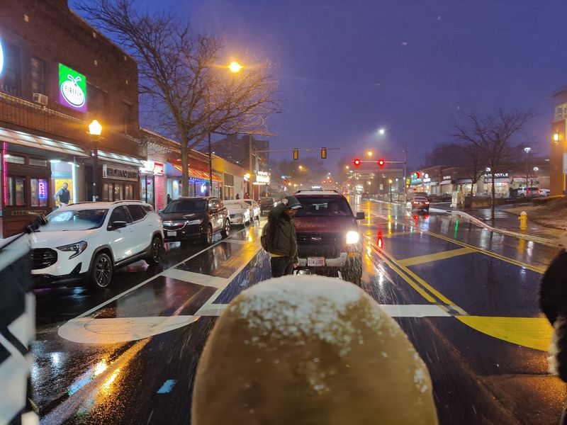

Mobile uploads
I'm so thankful and proud of this young man. He is stopping traffic last night in highland square as part of a protest against white supremacy.
A couple weeks ago a man who is the vice president of the local "Proud Boys" punched a young African American woman right on this block of Highland Square in Akron Ohio.
Before he attacked her he was yelling about n...rs for no reason. There were no Black people anywhere around him. Apparently he just enjoys spewing hate.
Then he found a young woman to take his hate out on.
The leader of the protest last night had us all stand in a line in the street. White people on the outside protecting the Black people on the inside. These kinds of displays of connection and solidarity fill me with boundless joy and hope and happiness and love.
Out of suffering and pain grows love and connection. EVERY. SINGLE. TIME.
The people are good. They so good and so hopeful. They are the manifestation of everything we think only is possible by an invisible all knowing all loving diety. I see unimaginable love and faith and hope every single day. I NEED YOU TO KNOW THAT.
Because I work deeply in the world of suffering homeless people I see first hand the response by the people: it's a love that is so powerful I sometimes have to bow my head and look away because it's so beautiful and brite.
Thank you all. I love you so much.